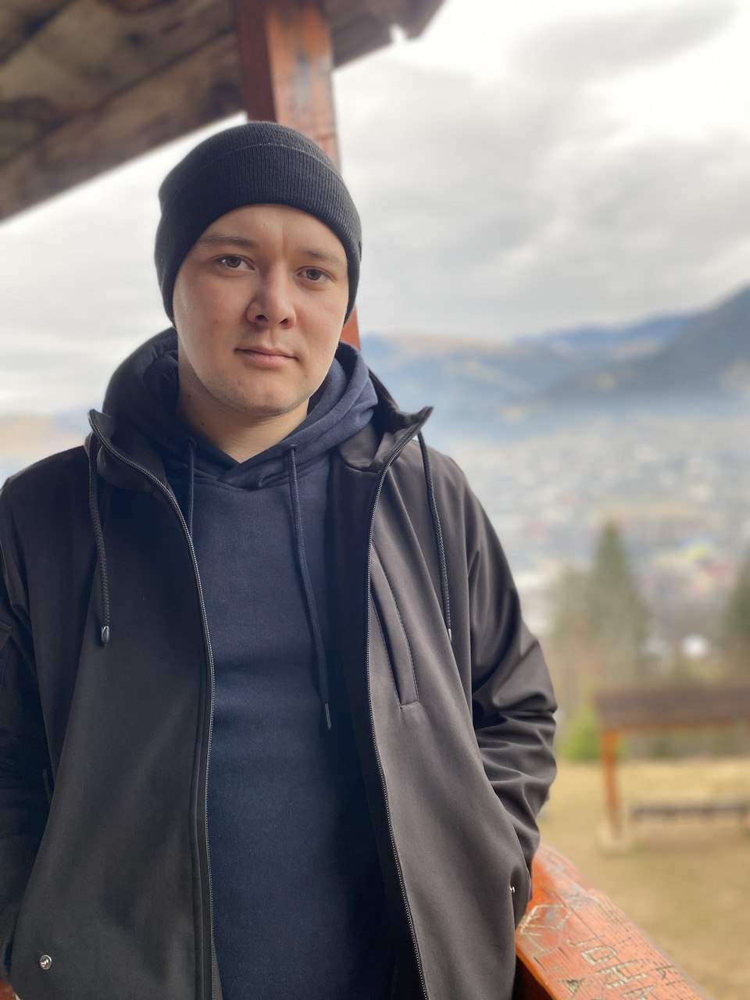

 Instagram
Середня спеціальна за фахом "Лісове господарство"
Народився і жив у Харківській області, незадовго до війни переїхав до міста, але був вимушений покинути його через війну. Доєднавшись до лав ЗСУ на службу мене направили у Івано-Франківську область, тому до сих пір тут і проживаю вже майже рік.
Завжди мріяв опанувати айті сферу, у вільний час граю в танчики, люблю проводити час на природі, рибалити, подорожувати, цікавлюся колекціонуванням рідкісних монет.
В людях ціную доброту, почуття гумору і вміння бути собою. Дуже дякую за можливість навчатися разом з вами, маю надію що у мене все вийде і це змінить моє життя